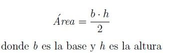

¿Qué es un Triangulo?
Elementos
En un triángulo se pueden diferenciar los siguientes elementos:
*Vértices: puntos en los que confluyen dos lados. Tiene 3 vértices (A, B y C).
*Lados: segmentos que unen dos vértices consecutivos del triángulo y que delimitan su perímetro. Tiene 3 lados (a, b y c).
*Ángulos interiores: ángulo que forman dos lados consecutivos en el vértice en el que confluyen. Hay 3 ángulos interiores
(α, β y γ). Los ángulos interiores del triángulo suman 180º
*Ángulos exteriores: ángulo de un lado con la prolongación exterior del lado consecutivo. Hay 3 ángulos exteriores (θ).
Los ángulos exteriores siempre suman 360º.
*Altura de un triángulo: La altura de un triángulo (h) es el segmento perpendicular a un lado que va desde el vértice
opuesto a este lado (o a su prolongación). También puede entenderse como la distancia de un lado al vértice
opuesto. Un triángulo tiene tres alturas, según el vértice de referencia que se escoja. Las tres alturas confluyen en un punto llamado ortocentro.
Tipos de Triangulos según sus lados
*Triángulo equilátero: tiene todos sus lados iguales. Por tanto, sus ángulos también son los tres iguales. Es decir:
Como todos los ángulos son iguales y suman 180º, todos son de 60º (α=β=γ=60º).
*Triángulo isósceles: tiene dos lados iguales. Por lo tanto, dos de sus ángulos también son iguales.

El ángulo desigual β es el que forman los dos lados iguales (a y c).
*Triángulo escaleno: los tres lados son desiguales, por lo que los tres ángulos también son diferentes. Es decir:


Tipos de Triangulos según sus ángulos
*Triángulo rectangulo: uno de sus ángulos es de 90º. Los otros dos son agudos (menores de 90º).

*Triángulo acutángulo: los tres ángulos son agudos (menores de 90º).
*Triángulo obtusángulo: uno de sus ángulos es mayor a 90º. Los otros dos son agudos (menores de 90º).
Área de un Triangulo
La formula general para obtener el área de un triangulo, es el siguiente:

Perímetro de un Triangulo
La formula general para obtener el perímetro de un triangulo, es el siguiente: